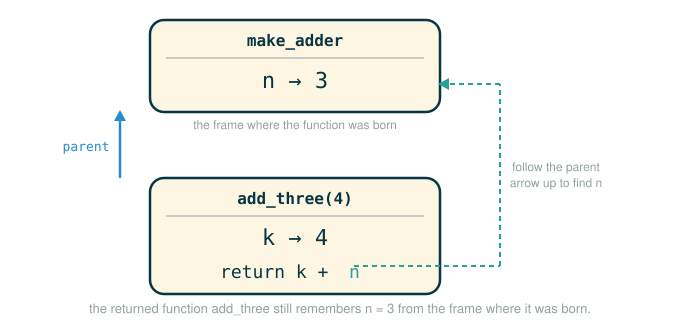

1.6 Higher-Order Functions: Nested Definitions, Returned Functions, and Newton's Method
Up to now a function has taken in numbers and handed back numbers. This lesson crosses two new lines. First, a function can take in another function and use it as a replaceable part, which lets one piece of code express a general method that many different problems can reuse. Second, a function can be defined inside another function and even returned as a value, which lets a function carry private information with it long after the call that built it has finished.
By the end you will be able to read a function whose job is "repeat an improvement until it is good enough," write helper functions nested inside an outer function and explain how they reach an outer name, return a customized function and trace why it still remembers what it was built with, and apply all of this to Newton's method for finding roots. The single habit that ties it together is the one from earlier lessons: when an expression looks dense, slow down and follow the names one frame at a time.
A General Method Is a Recipe With Slots
Think about how a good coffee shop runs a pour-over station. There is one fixed procedure on the wall: wet the filter, add grounds, pour in slow circles, wait, repeat the pour until the carafe is full, then stop. That procedure never changes. What changes is which beans go in and how the barista decides "full enough" for a given order. The grounds and the fullness check are slots; the procedure around them is fixed.
A general method of computation works the same way. We write one fixed procedure and leave slots where a specific problem plugs in its own functions. The procedure does not know or care what problem it is solving. It only knows the shape of the work: keep improving the current answer until a check says it is good enough, then return it. The grounds become an "improve the guess" function; the fullness check becomes an "is the guess good enough?" function. Swap those two slots and the same procedure computes a golden ratio, a square root, or the zero of any equation.
The improve Function
Here is that fixed procedure. It takes two functions as arguments and uses them as slots.
# (1)
def improve(update, close, guess=1):
while not close(guess):
guess = update(guess)
return guess
The function improve is a general expression of repeated refinement. It does not specify which problem is being solved; those details live entirely in the update and close functions handed in as arguments. Because improve accepts functions in its parameters, it is a higher-order function: a function that takes functions as arguments or returns one.
The names update and close are roles, not specific tools. A role is like a job posting. Different functions get hired into the same role for different problems. For the golden ratio, the update role is filled by a function that nudges a guess toward the golden ratio. For a square root, the same role is filled by a different function. The loop never changes; only the tools in the slots change.
Follow the line: the header of improve
def improve(update, close, guess=1):
├─ def ............... start building a function object
├─ improve .......... the name this function is bound to in the global frame
├─ ( ................ begin the parameter list
├─ update ........... a parameter expected to be bound to a function (the improver)
├─ , ................ separates one parameter from the next
├─ close ............ a parameter expected to be bound to a function (the stopping test)
├─ , ................ separates one parameter from the next
├─ guess=1 .......... the starting guess, with a default of 1 if the caller omits it
├─ ) ................ end the parameter list
├─ : ................ begin the indented body below
└─ defines ......... a function that refines a guess until close(guess) is trueInside the body, close(guess) calls whatever function currently fills the close slot, and update(guess) calls whatever function currently fills the update slot. Python does not remember the original names of those functions; it simply follows the bindings in the current frame.
Follow the line: the loop inside improve
while not close(guess):
├─ while ............ keep repeating the body as long as the condition holds
├─ not .............. flip the truth value that follows
├─ close(guess) ..... call the stopping test on the current guess (True if good enough)
├─ : ................ begin the loop body
└─ runs ............ the body repeatedly until the guess is finally good enoughRead the loop in plain words: as long as the current guess is not good enough, replace it with an updated guess, then check again. When the check finally says the guess is good enough, the loop ends and the last line returns that guess.
Approximating the Golden Ratio
The golden ratio, written , is the positive number that satisfies:
Dividing that equation by gives an equivalent form that suggests how to improve a guess:
If we have a guess for , plugging it into the right-hand side produces a better guess. That is exactly the update slot:
# (2)
def golden_update(guess):
return 1/guess + 1
To fill the close slot we need a checkable stopping test. We cannot ask "is this guess equal to ?" because is the very thing we are approximating, and floating-point numbers rarely land on an exact value anyway. Instead we ask whether the guess satisfies the defining equation closely enough. First, a helper for approximate equality:
# (3)
def approx_eq(x, y, tolerance=1e-15):
return abs(x - y) < tolerance
The tolerance 1e-15 is Python's notation for , a very small number. The function returns True when x and y differ by less than that tiny amount. Using approximate equality matters because two floating-point computations that should be equal in pure math often differ in the last few digits.
Now the stopping test asks whether guess * guess is approximately guess + 1, which comes straight from :
# (4)
def square_close_to_successor(guess):
return approx_eq(guess * guess, guess + 1)
The name says what it checks: the square of the guess is close to its successor (the next number up, guess + 1). With both slots filled, we call improve:
>>> improve(golden_update, square_close_to_successor)
1.6180339887498951Follow the line: filling the slots of improve
improve(golden_update, square_close_to_successor)
├─ improve .................... the general refinement procedure from (1)
├─ ( ......................... begin the arguments
├─ golden_update ............. the function object hired into the update slot (no parentheses: pass it, do not call it)
├─ , ......................... separates the two function arguments
├─ square_close_to_successor . the function object hired into the close slot
├─ ) ......................... end the arguments
└─ evaluates to .............. 1.6180339887498951, an approximation of phiThe detail that trips people up is the absence of parentheses on golden_update and square_close_to_successor. Writing golden_update passes the function itself into the slot. Writing golden_update() would call it and pass its return value instead, which is not what improve wants in those slots.
Why improve Works Here
The call creates a local frame for improve with these bindings:
Local frame for improve
update -> function golden_update
close -> function square_close_to_successor
guess -> 1Before each pass, the loop asks close(guess). If that is false, it runs guess = update(guess). For the golden ratio the early updates look like this:
update(1) -> 1/1 + 1 = 2.0
update(2.0) -> 1/2.0 + 1 = 1.5
update(1.5) -> 1/1.5 + 1 = 1.666...Each guess lands closer to . Here is the same progression as a table, with the stopping check shown at every step:
| Moment | Current guess |
close(guess) asks |
Next action |
|---|---|---|---|
| Start | 1 |
Is close to ? No. | Update to 2.0 |
| Next | 2.0 |
Is close to ? No. | Update to 1.5 |
| Next | 1.5 |
Is close to ? No. | Update to about 1.666... |
| Eventually | about 1.618... |
Is guess * guess close to guess + 1? Yes. |
Stop and return guess |
Notice what the loop is doing emotionally, not just algebraically: it is not expected to be right on the first try. It is allowed to be wrong, then less wrong, then less wrong again. That is why repeated improvement is such a powerful pattern. You do not need to leap straight to the final answer; the program can walk there one step at a time.
Testing improve
The original text checks the approximation against computed in closed form. The golden ratio has an exact formula, , so the test imports a real square root, computes the exact value, and asserts that the iterative result matches it.
# (5)
from math import sqrt
phi = 1/2 + sqrt(5)/2
def improve_test():
approx_phi = improve(golden_update, square_close_to_successor)
assert approx_eq(phi, approx_phi), 'phi differs from its approximation'
improve_test()
For this test, no news is good news: improve_test returns None after its assert statement runs successfully. An assert statement does nothing visible when its condition is true; it only speaks up, raising an error with the message 'phi differs from its approximation', if the condition is false. So a silent run means the iterative approximation and the closed-form value agree to within the tolerance.
Nested Definitions
So far the two slot functions for a problem have been written at the top level, side by side with improve. That works for the golden ratio because golden_update and square_close_to_successor need no extra information. Square roots are different: the update and the stopping test both depend on which number we are taking the root of.
The square-root update for a number a averages the current guess x with a/x:
Here is the averaging helper and a first attempt at the update, written with a as an extra parameter:
# (6)
def average(x, y):
return (x + y)/2
def sqrt_update(x, a):
return average(x, a/x)
This version is awkward. The slot in improve expects an update function of one argument (improve only ever calls update(guess)), but sqrt_update(x, a) needs two. We could thread a through improve somehow, but that would pollute the general procedure with a detail specific to square roots. The clean solution is to place the helper definitions inside the body of sqrt, so they can see a without taking it as a parameter:
# (7)
def sqrt(a):
def sqrt_update(x):
return average(x, a/x)
def sqrt_close(x):
return approx_eq(x * x, a)
return improve(sqrt_update, sqrt_close)
The indentation shows that sqrt_update and sqrt_close are defined inside sqrt. Like local assignment, local def statements affect only the current local frame: sqrt_update and sqrt_close exist only while sqrt is being evaluated. Consistent with the evaluation procedure, these inner def statements do not even run until sqrt is called.
Follow the line: a nested def header
def sqrt_update(x):
├─ (indentation) .... places this def inside the body of sqrt
├─ def .............. start building a function object
├─ sqrt_update ...... the name, bound in the local frame of the current sqrt call
├─ ( ................ begin the parameter list
├─ x ................ its one parameter, the current guess
├─ ) ................ end the parameter list
├─ : ................ begin the body
└─ defines ......... a one-argument update that also reaches a from the enclosing sqrt frameBoth inner functions use a, even though a is not their parameter. They find it in the frame created by the call to sqrt. This is the rule that makes nesting useful.
Lexical Scope and Closures
The key idea is lexical scope: a locally defined function has access to the name bindings in the scope where it is defined, not where it is called. In sqrt, the function sqrt_update refers to a, which is a parameter of its enclosing function sqrt. Sharing names this way among nested definitions is what lexical scoping means. Critically, the inner functions look up a in the environment where they were written, even though they are eventually called from inside improve, far away.
Supporting lexical scope requires two extensions to the environment model:
1. Each user-defined function has a parent environment: the environment in which it was defined.
2. When a user-defined function is called, its local frame extends its parent environment.Concretely, sqrt_update defined inside a call to sqrt(256) has that sqrt frame as its parent. When improve later calls sqrt_update(guess), Python builds a new frame for that call whose parent is the sqrt frame, not the global frame. So when the body needs a, Python does not find it locally, looks outward to the parent sqrt frame, finds a -> 256, and uses it.
This is where the mental model often wobbles, so slow down the call sqrt(256):
1. Python creates a local frame for sqrt.
2. In that frame, a -> 256.
3. Python creates sqrt_update and sqrt_close inside that frame.
4. Those inner functions record the sqrt frame as their parent environment.
5. Later, when sqrt_update runs and needs a, Python looks outward and finds a -> 256.The inner functions are not memorizing the characters 256 from the source. They are linked to the environment where the name a was bound during this particular call. Two advantages follow from lexical scoping:
- The names of a local function do not interfere with names outside the function in
which it is defined, because that local name is bound in the current local frame,
not the global frame.
- A local function can use the environment of the enclosing function, because the
body of the local function runs in an environment that extends the environment
in which it was defined.Because sqrt_update carries data with it (the value of a from the frame where it was defined), it is an example of a closure. Locally defined functions are often called closures precisely because they "enclose" information from their parent environment. Calling sqrt:
>>> sqrt(256)
16.0returns 16.0 because .
What the Environment Diagram Shows
For sqrt(256), the relevant frames look like this:
Global frame
average -> function average(x, y)
approx_eq -> function approx_eq(x, y, tolerance=1e-15)
improve -> function improve(update, close, guess=1)
sqrt -> function sqrt(a)
Local frame for sqrt [call it f1]
a -> 256
sqrt_update -> function sqrt_update(x) [parent = f1]
sqrt_close -> function sqrt_close(x) [parent = f1]An environment can be an arbitrarily long chain of frames that always ends at the global frame. Before this example, every environment had at most two frames: a local frame and the global frame. By calling functions defined inside other functions through nested def statements, we build longer chains. The most critical step when improve calls sqrt_update is that the new call frame takes its parent from sqrt_update itself, which is f1. That is how the body of sqrt_update reaches a -> 256, and it is the beginning of the closure model.
Functions as Returned Values
Nesting gives a function private access to its enclosing frame. The next step makes that idea far more powerful: an inner function can be returned from the outer function. In a lexically scoped language, a returned local function keeps its parent environment, so it remembers everything it was built with.
# (8)
def make_adder(n):
def adder(k):
return k + n
return adder
Reading this carefully: make_adder takes a number n, defines an inner function adder that adds n to its own argument k, and then returns adder itself (note: return adder, not return adder(...)). Each call to make_adder produces a fresh adder whose parent frame remembers a particular n.
# (9)
add_three = make_adder(3)
Now add_three is bound to the returned adder, and that function's parent frame remembers n -> 3. So:
>>> add_three(4)
7because inside adder, k is 4 and the remembered n is 3, giving 4 + 3.
Here is that pair of frames as a picture, with the parent arrow that lets the call to add_three(4) reach back to the n it was born with.

Follow the line: building and naming a returned function
add_three = make_adder(3)
├─ make_adder(3) .... call make_adder with n = 3; it builds and returns a fresh adder
├─ adder ............ that returned function remembers n -> 3 in its parent frame
├─ = ................ bind the name on the left to the returned function
├─ add_three ........ the new name pointing at that customized adder
└─ performs ........ creates add_three as a function that adds 3 to its argumentThe name add_three can feel misleading at first because the source never literally says def add_three(k). The name comes entirely from the assignment. After that line, add_three is simply a name for the returned function, and because its parent frame remembers n -> 3, every future call adds 3. This is the payoff of pinning down the environment model: nothing new is needed to explain returned functions. The same two rules about parent environments do all the work.
Function Composition
Once you have many small functions, composition is a natural way to combine them: given functions f(x) and g(x), you may want a new function h(x) = f(g(x)). We can build composition with the tools we already have.
# (10)
def compose1(f, g):
def h(x):
return f(g(x))
return h
The returned function h first applies g to x, then applies f to that result:
The 1 in compose1 signals that the composed functions each take a single argument. That convention is not enforced by the interpreter; the 1 is just part of the name. Here is composition applied to two familiar one-argument functions:
# (11)
def square(x):
return x * x
def successor(x):
return x + 1
square_successor = compose1(square, successor)
result = square_successor(12)
Tracing the call square_successor(12), which is h(12):
successor(12) -> 13 (g runs first)
square(13) -> 169 (f runs on g's result)So result is 169. The order matters: because h computes f(g(x)), the inner function g (here successor) runs first and the outer function f (here square) runs second. When compose1 is traced in an environment diagram, you will also see a top-level function f defined with the docstring """Never called."""; it is there only to demonstrate that the local parameter f inside compose1 does not collide with the global f. Lexical scoping keeps the two separate.
Newton's Method
Newton's method is a classic iterative way to find the zeros of a mathematical function: the arguments at which the function returns 0. Finding a zero is often the same as solving some other problem, such as computing a square root. Newton's method works on any function that is differentiable (a math property you can take on faith here — it just means the function is smooth enough for the method to work). You will not need to test for this yourself.
Suppose we want a number such that:
Newton's update rule is:
where is the derivative of at . Do not worry if the derivative, the notation, or the idea of a tangent line are unfamiliar — you do not need any of them to follow the code; treat as a black box that hands back a slope number, and read the rest as a recipe. As optional color: geometrically, is the slope of at the point , and the method slides along the tangent line until it crosses the horizontal axis, then repeats from that new point. Each step lands closer to a value where .
If you have not met derivatives before, treat the formula as a recipe for now. We apply it below to the specific case , and you can check the answer by hand: if Newton's method reports 8.0 as a zero of , then squaring 8.0 should give 64. The plain-language version of the rule is:
f(x) tells us how wrong the current guess is.
f'(x) gives slope information, which tells us how to adjust the guess.
The update formula uses both pieces to choose the next guess.So Newton's method is still the same repeated-improvement pattern. The only new detail is that the update is mathematically smarter than "try the next number." In code, the update is a returned function customized to a particular f and its derivative df:
# (12)
def newton_update(f, df):
def update(x):
return x - f(x) / df(x)
return update
Follow the line: the body of the returned update
return x - f(x) / df(x)
├─ x ................ the current guess
├─ - ................ subtract the correction term from the current guess
├─ f(x) ............. how far the current guess is from making f equal to 0
├─ / ................ divide the gap by the slope
├─ df(x) ............ the slope of f at x (its derivative)
└─ evaluates to .... the next, improved guess for a zero of fFinding a Zero
To run Newton's method through improve, we need a stopping test that decides when a guess is close enough to a zero. We build it inside find_zero so it can reach the particular f passed into this call:
# (13)
def find_zero(f, df):
def near_zero(x):
return approx_eq(f(x), 0)
return improve(newton_update(f, df), near_zero)
Read the final line carefully. newton_update(f, df) is called here, and it returns a one-argument update function, which becomes the update slot for improve. The helper near_zero is passed (not called) as the close slot. So find_zero says: apply Newton's update rule until f(x) is approximately 0.
This is another closure. The helper near_zero is created inside find_zero, so it can use the specific function f that was passed into this call. If find_zero is solving , then near_zero checks that function; a different call solving a different equation gets a near_zero that checks that different function. The same shape of helper, specialized by lexical scope each time.
Square Roots with Newton's Method
To compute , find a zero of:
because means . The derivative is:
That derivative gives the slope of . You do not need to derive it to follow the machine model; what matters is how the program packages the two roles:
f measures how far x is from solving x*x = a
df gives slope information for Newton's updateIn code, both roles are defined inside square_root_newton so they close over a:
# (14)
def square_root_newton(a):
def f(x):
return x * x - a
def df(x):
return 2 * x
return find_zero(f, df)
Calling it:
>>> square_root_newton(64)
8.0returns 8.0 because .
nth Roots
The same pattern computes roots of arbitrary degree . The degree root of is the such that , with repeated times. First we need a power function:
# (15)
def power(x, n):
"""Return x * x * x * ... * x for x repeated n times."""
product, k = 1, 0
while k < n:
product, k = product * x, k + 1
return product
For example, power(2, 5) returns 32 because . To compute the th root of , find a zero of:
whose derivative is:
In code, f and df are again nested so they close over both n and a:
# (16)
def nth_root_of_a(n, a):
def f(x):
return power(x, n) - a
def df(x):
return n * power(x, n-1)
return find_zero(f, df)
The results match what we expect:
>>> nth_root_of_a(2, 64)
8.0
>>> nth_root_of_a(3, 64)
4.0
>>> nth_root_of_a(6, 64)
2.0because , , and . One general procedure, find_zero, specialized three different ways by the functions plugged into its slots.
Step-by-Step Trace: A Returned Closure
The clearest place to watch closures in action is make_adder, because it has a single nested function remembering a single outer name. Walk the two calls frame by frame.
Step 1: add_three = make_adder(3)
Create a local frame for make_adder [call it f1], with n -> 3.
Run the def for adder: bind adder in f1, and record adder's parent as f1.
Run "return adder": hand the adder function object back.
Bind add_three in the global frame to that returned function.
f1 has now finished running, but it is kept alive because adder points back to it.
Step 2: add_three(4)
Look up add_three in the global frame: it is the adder from Step 1.
Create a new frame for this call [call it f2], whose PARENT is f1 (adder's parent).
In f2, bind the parameter k -> 4.
Evaluate "return k + n":
k is found locally in f2 -> 4
n is not in f2, so look in the parent f1 -> 3
compute 4 + 3 -> 7
The call returns 7.The lesson of the trace is the parent link. The frame f2 does not chain to the global frame; it chains to f1, the frame that defined adder. That is why a function returned from a finished call still reaches the values it was built with.
⚠Common Beginner Traps
When this material goes wrong for beginners, it is almost always one of these.
| Mistake | What Goes Wrong | Safer Question |
|---|---|---|
Passing golden_update() instead of golden_update |
Python calls the update too early and passes its return value (a number) into improve, which then tries to call that number and raises TypeError: 'float' object is not callable |
Should this slot receive a function or a number? |
| Expecting a returned function to forget its parent frame | Returned functions still reach names from the environment where they were defined, so a call you thought would fail quietly returns the remembered value instead | Which frame is this function's parent? |
Writing return adder(...) when you meant return adder |
Returning the call hands back a number, so the caller gets a value it cannot call and a later use raises TypeError: 'int' object is not callable |
Do I want to hand back the function or the result of calling it? |
Calling newton_update where a slot needs the bare function, or passing it without calling |
In find_zero, leaving off the parentheses puts a two-argument maker in the one-argument update slot, so improve calls it with one argument and raises TypeError: ... missing 1 required positional argument: 'df' |
Does this slot need the maker called, or the function it produces? |
| Using Newton's method without a derivative | The update rule needs both and , so without df the formula x - f(x)/df(x) cannot be evaluated |
What function gives the slope information? |
| Missing a stopping test | Repeated improvement loops forever without a close function, so the program hangs and never returns |
What condition tells the loop the current guess is good enough? |
✓Check Your Understanding
- What two function arguments customize
improve, and why does it not need to know which problem it is solving? - Why does
make_adder(3)return a function that can still use3later, even aftermake_adderhas finished running? - In
sqrt(a), why aresqrt_updateandsqrt_closedefined insidesqrtinstead of at the top level? - Using the
make_adderdefinition, what doesmake_adder(10)(5)evaluate to, and which frame supplies each name used in the final addition? - Why does
compose1(square, successor)(12)applysuccessorbeforesquare? - In
find_zero, why isnewton_update(f, df)written with parentheses whilenear_zerois written without them?
Show the answers
- The
updatefunction and theclosefunction.improveonly needs the shape of the work (refine until a check passes), so all problem-specific detail lives in those two slots. - The returned
adderkeeps a parent environment in whichnwas bound to3, and that frame stays alive because the returned function points back to it. - So they can reach the particular value of
afor this square-root problem through lexical scope, and so they each take the single argument thatimproveexpects. - It evaluates to
15.make_adder(10)returns anadderwhose parent frame bindsn -> 10; calling it with5opens a frame bindingk -> 5, andreturn k + nreadskfrom that call frame andnfrom the parent frame, giving5 + 10. compose1returns a function that computesf(g(x)), so the inner functiong(heresuccessor) runs first and the outer functionf(heresquare) runs on its result.newton_update(f, df)is called to produce the one-argumentupdatefunction that fillsimprove's update slot, whereasnear_zerois passed as a function object to fill the close slot.
§Summary
General methods package a repeated process so that different problems can supply different details. The function improve captures the pattern of updating a guess until a closeness test succeeds, and it works for the golden ratio, square roots, and Newton's method without changing a line, because the problem-specific parts arrive through its update and close slots. Nested definitions let helper functions reach names from an enclosing frame through lexical scope, and returned functions keep that access as closures, carrying private data with them after the defining call has finished. Newton's method is one more instance of the same abstraction: a general improvement rule specialized by a function and its derivative. Once the environment model includes parent environments and extended frames, none of this needs new machinery; it all follows from carefully tracking which frame each name lives in.
▶Step-Through Checkpoint
The first lines of the block below define and customize a function; the last line is the interesting call. Before you step, write down three predictions: how many local frames open in total, what n and k hold in those frames, and what result is bound to at the end.
# (17)
def make_adder(n):
def adder(k):
return k + n
return adder
add_five = make_adder(5)
result = add_five(8)
Step through it and check each prediction. Two local frames open: one for make_adder with n -> 5, and one for the call to add_five, which binds k -> 8 and finds n through its parent link to the finished make_adder frame, so result is bound to 13. That link is why add_five still reaches its n even though make_adder(5) has already returned.